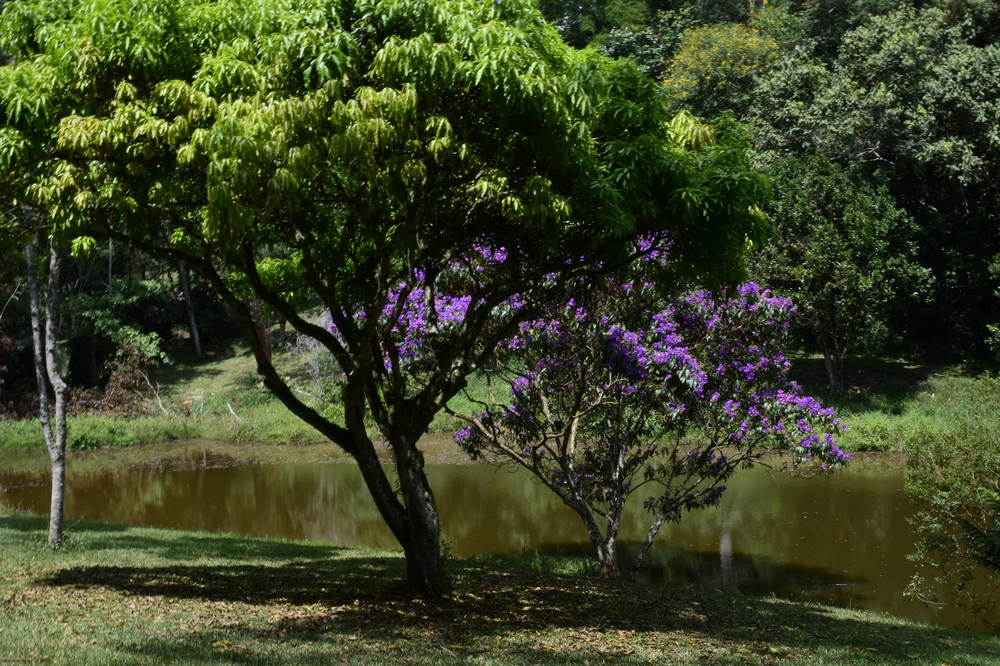

Preservação da Mata Atlântica pelo Clube de Campo de São Paulo
by Eduardo Saliby Salomão
ESTE TRABALHO DE CONCLUSÃO DE CURSO NÃO REFLETE A OPINIÃO DA UNIVERSIDADE PRESBITERIANA MACKENZIE. SEU CONTEÚDO E ABORDAGEM SÃO DE TOTAL RESPONSABILIDADE DE SEU AUTOR.